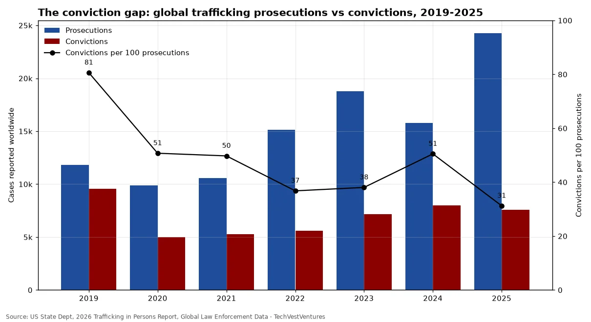

Q7. Conviction Gap
Weekly Focus graphs: new charts are added each week from primary data. Each caption names its sources; numbers are not copied from third-party chart images.

New in the 2026 TIP Report: governments reported a record 24,254 trafficking prosecutions in 2025, up 54% on 2024, but convictions fell to 7,576. In 2019 there were 81 convictions per 100 prosecutions; in 2025 just 31. Much of the 2025 jump came from the Near East (6,568 prosecutions vs 1,743 in 2024) and South & Central Asia (5,734 vs 2,754). The State Department warns these are estimates from government data that 'fluctuate' with uneven national reporting. This year's report itself names the cause: 'Failures in victim protection and support are a primary reason for unsuccessful prosecutions.'
Sources: US State Dept, 2026 Trafficking in Persons Report, Global Law Enforcement Data